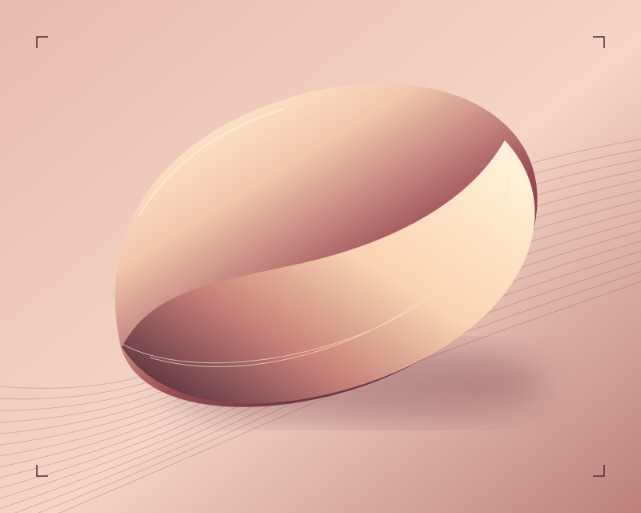

Caderno de dermatologia
- 01
Pele no dia a dia
Mudanças na pele, desconfortos e dúvidas sobre a rotina de cuidado.
- 02
Manchas e textura
Um espaço para conversar sobre as alterações que você tem percebido.
- 03
Revisão da rotina
Produtos em uso, hábitos e o que vale ajustar depois da avaliação.
Dra. Alana Luísa
Dermatologista em Goiânia. Informa formação médica e residência na Escola Paulista de Medicina da Unifesp em seu perfil profissional.
CRM-GO 29886 · RQE 17522
A conversa antes do plano
- 01
Escuta
Compartilhe o que motivou a consulta e o que já tentou até aqui.
- 02
Avaliação
Converse sobre seu histórico e suas prioridades.
- 03
Próximos passos
Alinhe as opções e como será o acompanhamento.
Cuide da sua pele com orientação.
Consulte horários e localização pelo canal de atendimento indicado no perfil profissional.
Perguntas frequentes
Como marco a primeira consulta?
Abra o canal de agendamento e confirme disponibilidade com a equipe.
O que posso levar?
Se tiver, leve exames anteriores e uma lista dos produtos e medicamentos que usa.
Onde é o atendimento?
O perfil profissional indica atendimento em Goiânia. Confirme a unidade com a equipe ao agendar.